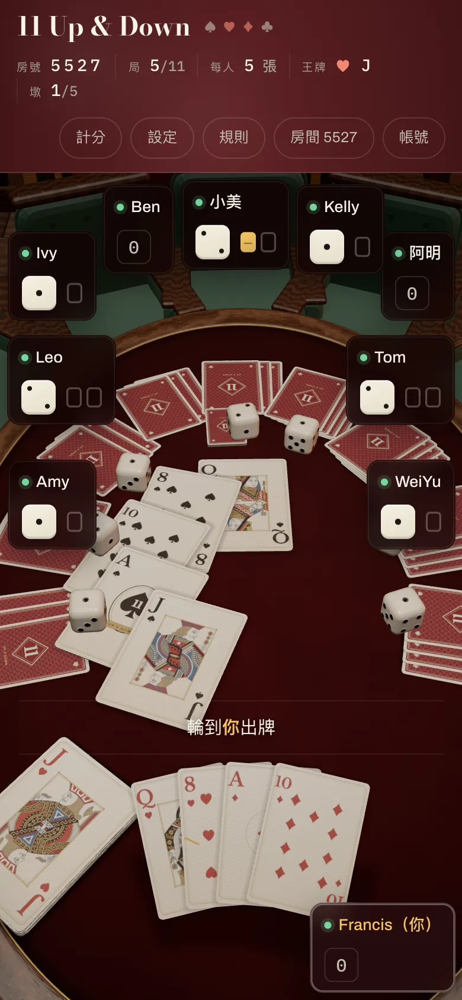
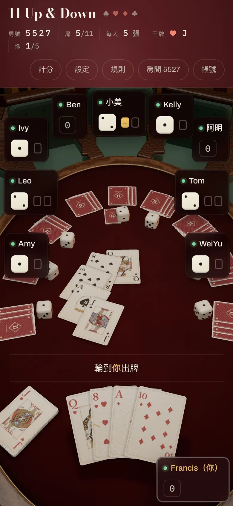

定案：只有手機縮成七成
手機直拿、橫拿都縮；iPad 和電腦維持原本的大小，名牌和平面模式都沒動。已經寫進遊戲，還沒推上線。做進去之後在 iPhone 上拍的畫面，跟下面「七成」那張一模一樣。
10 人局・現在
10 人局・七成（做進遊戲後拍的）
人多的時候差最多：現在這一墩會蓋到「輪到你出牌」那行字和旁邊的骰子，七成就不會。
點上面的「現在」和「七成」來回切，最容易看出差別。點圖可以放大。
寬螢幕上左邊固定是「現在」。點圖可以放大。
四種大小
現在
對手的牌背跟你的手牌差不多大，左下角的牌堆和王牌佔掉一大塊。電腦上，這一墩會壓到「輪到你出牌」那行字。
七成你選的，只用在手機
鬆一點，但桌上還是滿的。電腦上，這一墩剛好貼在那行字上方。
五成半
對手的牌、牌堆、骰子都退成小東西，這一墩聚在桌子正中間，一眼看完。iPhone 上 K、Q、J 的人像還認得出來。
四成半
最空。但在 iPhone 上，這一墩的人像要湊近才看得清楚，牌堆上的王牌也只剩一小張。
這次動了什麼
一起縮小
- 別人手上的牌背
- 牌堆和翻開的王牌
- 桌子中間這一墩
- 每個人贏到的墩
- 發牌時先落在你面前的那一疊
- 骰子：少縮一點（七成那版的骰子是八成五），叫墩時丟進金色圈裡還要看得清楚
沒動
- 你的手牌
- 名牌（Kelly、Tom 那幾塊黑底的）
- 上面的資訊列和按鈕
- 叫墩的金色圈
- 平面模式
另外，這一墩往桌子中間收攏了。牌變小之後如果還照原本那一圈排，五張會散成五個點，看不出是同一墩；收攏之後才聚成一堆。